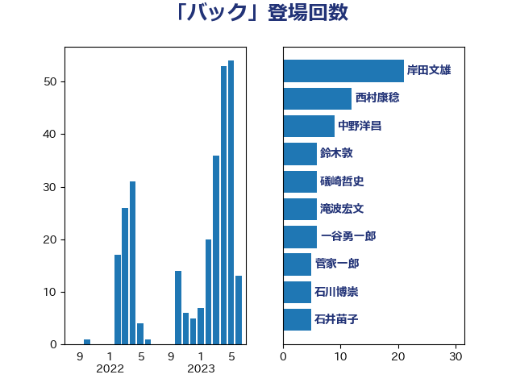

単語「バック」

| 岸田文雄 | 自由民主党 | 21 回 |
| 西村康稔 | 自由民主党 | 12 回 |
| 中野洋昌 | 公明党 | 9 回 |
| 鈴木敦 | 国民民主党 | 6 回 |
| 礒崎哲史 | 国民民主党 | 6 回 |
| 滝波宏文 | 自由民主党 | 6 回 |
| 一谷勇一郎 | 日本維新の会 | 6 回 |
| 菅家一郎 | 自由民主党 | 5 回 |
| 石川博崇 | 公明党 | 5 回 |
| 石井苗子 | 日本維新の会 | 5 回 |
| 斉藤鉄夫 | 公明党 | 5 回 |
| 大西健介 | 立憲民主党 | 5 回 |
| 齋藤健 | 自由民主党 | 4 回 |
| 長友慎治 | 国民民主党 | 4 回 |
| 米山隆一 | 立憲民主党 | 3 回 |
| 牧島かれん | 自由民主党 | 3 回 |
| 本庄知史 | 立憲民主党 | 3 回 |
| 新妻秀規 | 公明党 | 3 回 |
| 大島敦 | 立憲民主党 | 3 回 |
| 高橋はるみ | 自由民主党 | 2 回 |
| 青柳仁士 | 日本維新の会 | 2 回 |
| 階猛 | 立憲民主党 | 2 回 |
| 笠井亮 | 日本共産党 | 2 回 |
| 石井章 | 日本維新の会 | 2 回 |
| 田村智子 | 日本共産党 | 2 回 |
| 片山大介 | 日本維新の会 | 2 回 |
| 浅野哲 | 国民民主党 | 2 回 |
| 森屋隆 | 立憲民主党 | 2 回 |
| 梅村みずほ | 日本維新の会 | 2 回 |
| 林芳正 | 自由民主党 | 2 回 |
| 末松義規 | 立憲民主党 | 2 回 |
| 星野剛士 | 自由民主党 | 2 回 |
| 平山佐知子 | 無所属 | 2 回 |
| 川田龍平 | 立憲民主党 | 2 回 |
| 川合孝典 | 国民民主党 | 2 回 |
| 岩田和親 | 自由民主党 | 2 回 |
| 小沼巧 | 立憲民主党 | 2 回 |
| 小林史明 | 自由民主党 | 2 回 |
| 嘉田由紀子 | 無所属 | 2 回 |
| 加藤勝信 | 自由民主党 | 2 回 |
| 下条みつ | 立憲民主党 | 2 回 |
| 上田清司 | 国民民主党 | 2 回 |
| 高階恵美子 | 自由民主党 | 1 回 |
| 高見康裕 | 自由民主党 | 1 回 |
| 高橋千鶴子 | 日本共産党 | 1 回 |
| 高橋光男 | 公明党 | 1 回 |
| 高市早苗 | 自由民主党 | 1 回 |
| 音喜多駿 | 日本維新の会 | 1 回 |
| 阿部弘樹 | 日本維新の会 | 1 回 |
| 長峯誠 | 自由民主党 | 1 回 |
| 鎌田さゆり | 立憲民主党 | 1 回 |
| 鈴木英敬 | 自由民主党 | 1 回 |
| 鈴木義弘 | 国民民主党 | 1 回 |
| 野田国義 | 立憲民主党 | 1 回 |
| 進藤金日子 | 自由民主党 | 1 回 |
| 輿水恵一 | 公明党 | 1 回 |
| 谷川とむ | 自由民主党 | 1 回 |
| 西村明宏 | 自由民主党 | 1 回 |
| 茂木敏充 | 自由民主党 | 1 回 |
| 緒方林太郎 | 無所属 | 1 回 |
| 竹詰仁 | 国民民主党 | 1 回 |
| 空本誠喜 | 日本維新の会 | 1 回 |
| 稲津久 | 公明党 | 1 回 |
| 福島伸享 | 無所属 | 1 回 |
| 神津たけし | 立憲民主党 | 1 回 |
| 田島麻衣子 | 立憲民主党 | 1 回 |
| 田名部匡代 | 立憲民主党 | 1 回 |
| 浜野喜史 | 国民民主党 | 1 回 |
| 河野太郎 | 自由民主党 | 1 回 |
| 河西宏一 | 公明党 | 1 回 |
| 池畑浩太朗 | 日本維新の会 | 1 回 |
| 水岡俊一 | 立憲民主党 | 1 回 |
| 櫻井充 | 自由民主党 | 1 回 |
| 櫛渕万里 | れいわ新選組 | 1 回 |
| 横山信一 | 公明党 | 1 回 |
| 榛葉賀津也 | 国民民主党 | 1 回 |
| 森山浩行 | 立憲民主党 | 1 回 |
| 杉尾秀哉 | 立憲民主党 | 1 回 |
| 本田顕子 | 自由民主党 | 1 回 |
| 早坂敦 | 日本維新の会 | 1 回 |
| 庄子賢一 | 公明党 | 1 回 |
| 平木大作 | 公明党 | 1 回 |
| 島村大 | 自由民主党 | 1 回 |
| 岸真紀子 | 立憲民主党 | 1 回 |
| 岬麻紀 | 日本維新の会 | 1 回 |
| 山添拓 | 日本共産党 | 1 回 |
| 山崎誠 | 立憲民主党 | 1 回 |
| 山井和則 | 立憲民主党 | 1 回 |
| 小野田紀美 | 自由民主党 | 1 回 |
| 小西洋之 | 立憲民主党 | 1 回 |
| 小熊慎司 | 立憲民主党 | 1 回 |
| 小池晃 | 日本共産党 | 1 回 |
| 宮本岳志 | 日本共産党 | 1 回 |
| 大島九州男 | れいわ新選組 | 1 回 |
| 塩川鉄也 | 日本共産党 | 1 回 |
| 城内実 | 自由民主党 | 1 回 |
| 國重徹 | 公明党 | 1 回 |
| 和田有一朗 | 日本維新の会 | 1 回 |
| 住吉寛紀 | 日本維新の会 | 1 回 |
| 仁比聡平 | 日本共産党 | 1 回 |
| 中田宏 | 自由民主党 | 1 回 |
| 三上えり | 立憲民主党 | 1 回 |